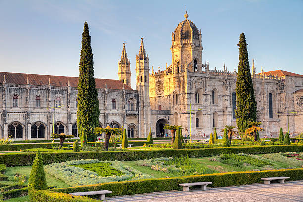
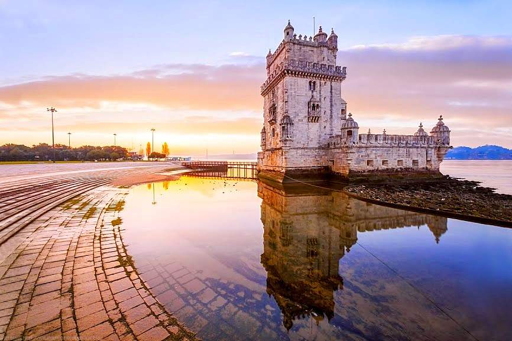
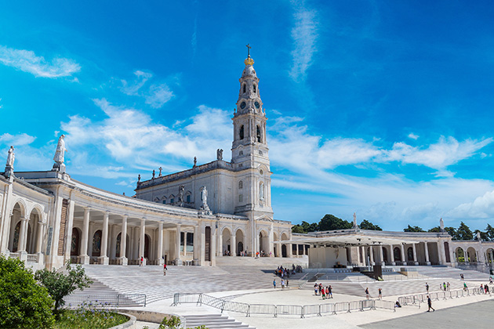

Por que escolher Portugal para fazer turismo?
Portugal é um destino encantador e vibrante, que combina uma rica herança histórica, uma cultura única, paisagens deslumbrantes e uma gastronomia incomparável. Localizado no extremo sudoeste da Europa, na Península Ibérica, Portugal é conhecido pela sua hospitalidade e pela calorosa recepção aos visitantes. Aqui, você encontrará desde a beleza das suas praias douradas até a tranquilidade das suas vilas medievais, sem contar a beleza das suas montanhas e cidades vibrantes.
Atrações mais visitadas de Portugal.
1. Mosteiro dos Jerónimos (Lisboa)
Símbolo máximo da Era dos Descobrimentos, o Mosteiro dos Jerónimos é uma joia do estilo manuelino, construído no século XVI por ordem de D. Manuel I. Patrimônio Mundial da UNESCO, abriga os túmulos de Vasco da Gama e Camões. Fica em Belém, perto da Torre de Belém e dos famosos pastéis.
Clique no link e saiba mais.
2. Torre de Belém (Lisboa)
Um dos monumentos mais emblemáticos de Lisboa, a Torre de Belém foi construída no século XVI e servia como fortaleza de defesa. Localizada à beira do rio Tejo, é um Patrimônio Mundial da UNESCO e oferece vistas deslumbrantes da cidade e do rio.
Clique no link e saiba mais.
3. Santuário de Fátima
Um dos maiores centros de peregrinação do mundo. O Santuário de Fátima é um local de profunda espiritualidade, onde milhões de visitantes buscam paz, oração e reflexão.
Clique no link e saiba mais.
Informações adicionais sobre o site.
Este site foi desenvolvido como parte de um projeto acadêmico para a disciplina de Programação Web do IFAL - Campus Arapiraca. O conteúdo apresentado é uma introdução às principais atrações turísticas de Portugal, com links para mais informações.